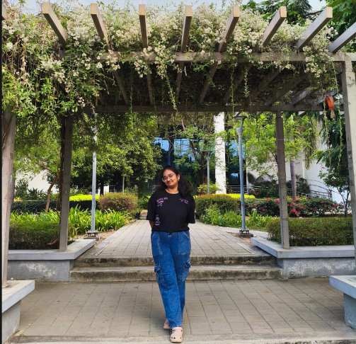
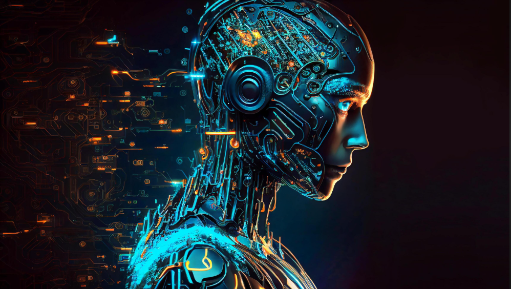
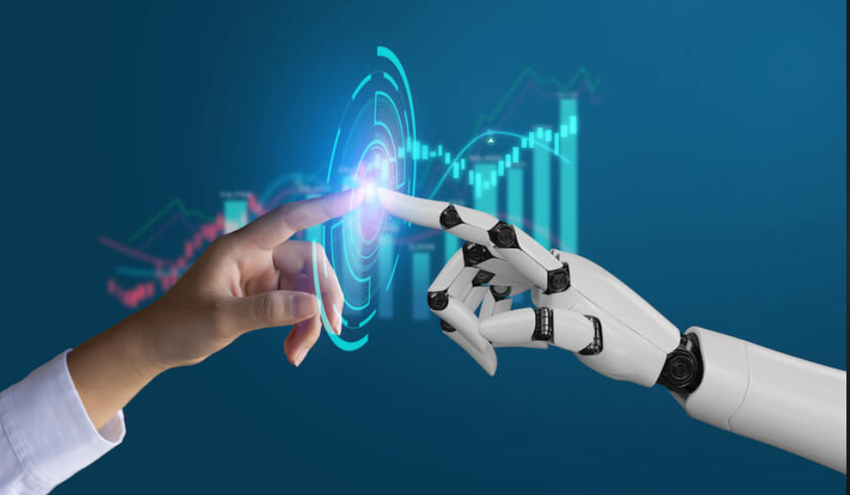

I am Vijayasri Camarushi, a CSE undergraduate at IIIT Sri City.
Research Intern at HCI Lab working on Computer Vision & ISL.
Building a large-scale Indian Sign Language dataset.
🎓 IIIT Sri City – B.Tech CSE
🔬 Research Intern – HCI Lab
📄 Research Paper Contribution (Acknowledged)
🤟 Working on ISL Dataset (Computer Vision)
My journey into technology started with curiosity about how systems work. I began learning programming with C and gradually explored deeper concepts.
I completed my SSC (10th) in 2023 and my Intermediate (12th) in 2025 with MPC stream from Aditya Talent School, Kakinada; where I developed strong analytical and problem-solving skills.
Over time, I developed an interest in AI/ML and Computer Vision, working on projects that improved my problem-solving and development skills.
Currently, I am focused on building impactful projects and continuously improving my technical skills.
C Programming
Java(Learning)
Python(Learning)
Computer Vision(Learning)